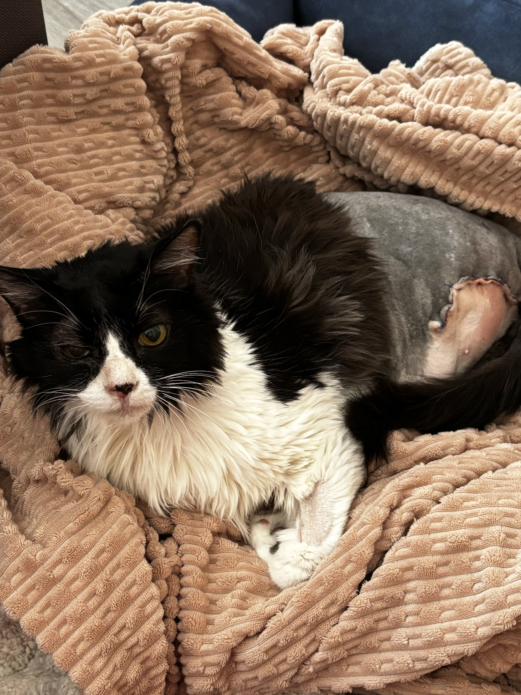
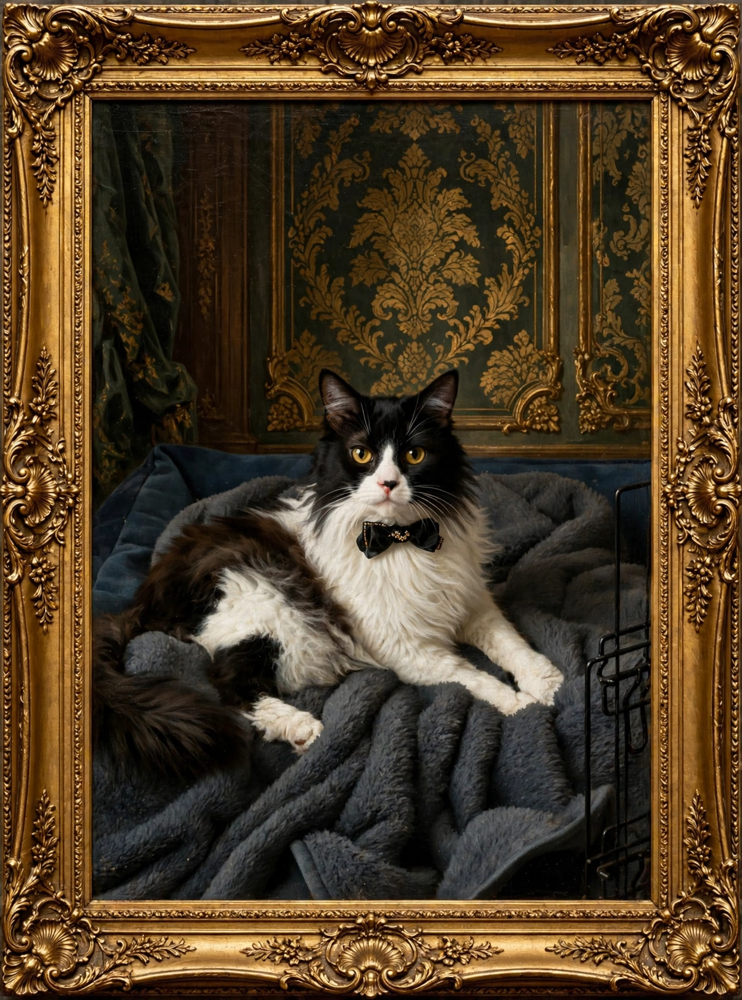
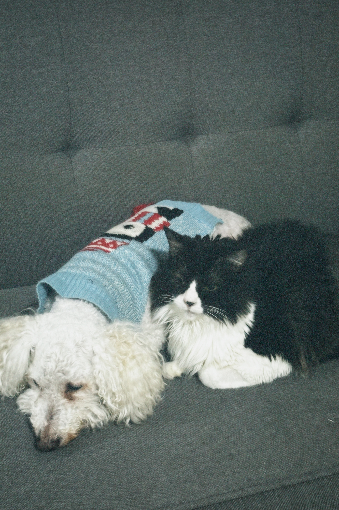
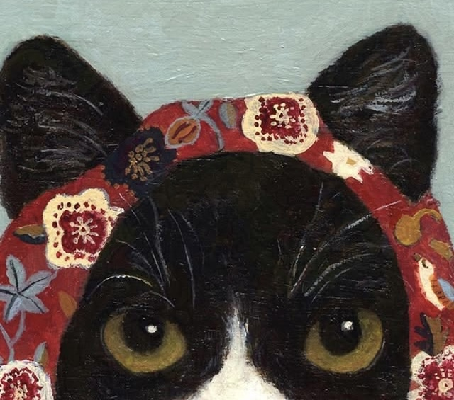

Very Affectionate
Pompón loves receiving attention and being close to the people around him. His gentle personality is one of the things that makes him so special.
Pompón is a loving and resilient cat from Alto Hospicio, in northern Chile. His life began with a difficult experience, but his gentle personality and love for people and animals have made his story truly special.


Pompón is originally from Alto Hospicio, in northern Chile. One day, a group of people found him after rescuing him from a group of dogs. He had been badly injured and needed immediate medical attention.
His left leg was severely injured and no longer functioning. His left eye was also badly affected. We offered to take him in as a temporary foster home so he could receive the veterinary care he needed.
After his treatment and recovery process, the veterinarians had to amputate his injured leg. His left eye was also left with a chronic condition that required ongoing care.
Despite everything he experienced, Pompón never lost his loving and gentle personality. He is one of the sweetest cats and has always enjoyed being around people and other animals.
Pompón loves receiving attention and being close to the people around him. His gentle personality is one of the things that makes him so special.
One of the funniest things about Pompón is that he still loves dogs, even after his difficult experience with them.
His veterinarian noticed how calm and gentle Pompón was and said that his personality could even make him a good therapy cat.
Pompón's love for dogs became especially funny when he met Toby. Pompón would often follow Toby around, wanting to stay close to him.
Toby, however, was not always as excited about the attention and would sometimes move away from Pompón. Pompón did not seem to take it personally and simply continued being his affectionate self.
This is one of the things that makes Pompón so funny: even after everything he experienced, he never stopped trusting and loving other animals.


After his recovery, Pompón stayed in a temporary home while people searched for a permanent family for him. For about a year and a half, no one adopted him.
During that time, he continued to show everyone how affectionate, calm, and playful he was. Eventually, the temporary home became his permanent home, and Pompón became part of the family.
What started as an effort to give him a safe place to recover became a lifelong friendship.
Today, Pompón is a happy cat who enjoys playing, sleeping, watching birds, and spending time with his family. Because of his limited mobility, he gained some weight after his recovery, so now he has a new challenge: getting healthier and losing weight.
Pompón currently weighs about 5.8 kilograms and measures approximately 70 centimeters from his head to the base of his tail. Even though he has to be more careful with his movement, he still loves to play and sometimes forgets how strong he is!
When Pompón gets excited while playing, he does not always measure his strength, so his family has to be a little careful. His playful personality, however, is one of the many things they love about him.
Pompón went through serious injuries and a major surgery, but he continued enjoying life.
His difficult past never stopped him from trusting people and loving the animals around him.
Three legs have not stopped Pompón from playing, exploring, and enjoying his favorite activities.
Pompón learned to adapt to life with three paws after his injured leg had to be amputated.
Even after being rescued from a group of dogs, Pompón still loves dogs and enjoys being around them.
His veterinarian noticed his unusually gentle personality and said he could have the qualities of a therapy cat.
After gaining weight during his recovery, Pompón is now working on becoming healthier and more active.
Pompón weighs about 5.8 kilograms and measures approximately 70 centimeters without counting his tail.
He loves to play and sometimes gets so excited that he forgets just how strong he is!